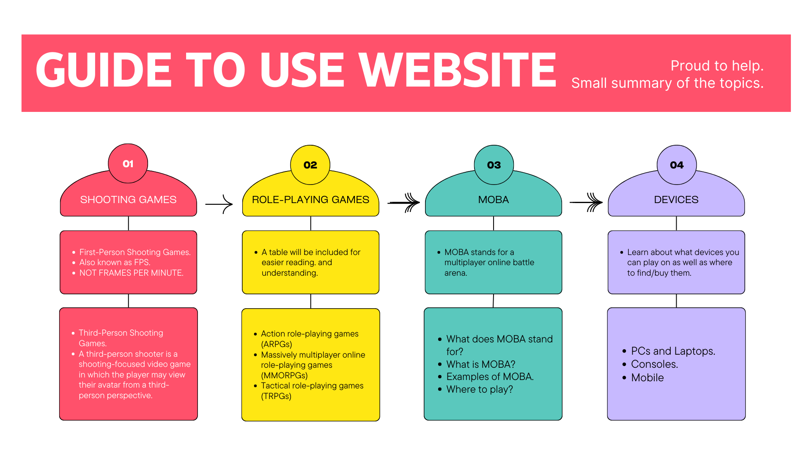

Click any one of these above to be directed to the indicated page.
A Guide Map

Mental Health Aspect.
NOTE:
It is important to take care of your mental and physical health while playing video games. Sometimes players get mind-blocks because of constantly losing games and/or losing their temper. This raises blood pressure, and having blood pressure that is consistently high is unhealthy for your body.In other situations, being in front of screens for a long period of time is bad for your eyes, and constantly being in a chair takes an unhealthy toll on your body. So, it is important to take breaks and keep yourself in check.